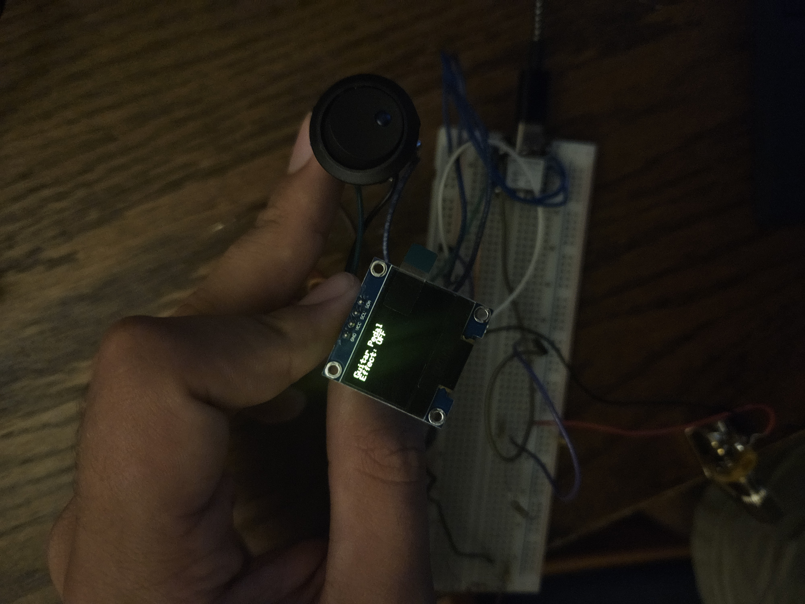
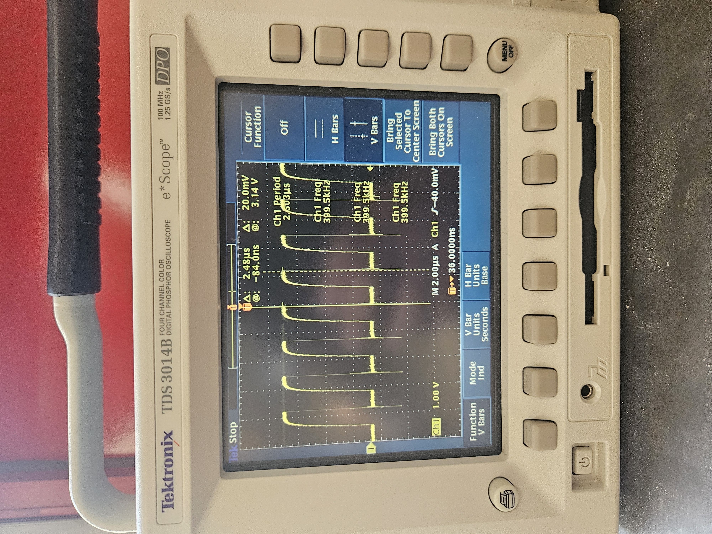

<div class="textcontainer">
<p class="margin"> </p>
<h3>Week 7: Electronic Outputs</h3>
<h4>Assignment: Minimum Viable Product for Final Project</h4>
<h4>for the MVP, I attempted to make everything except the enclosure of a distortion pedal. I made the wiring and the code for the final project and I was somewhat successful in my efforts. I succeded in making the user interface and the wiring is almost what I want for the final project. The code however, has given me many issues and even after debugging I still don't understand the things that my circuit does when shown this code.</h4>
<h4></h4>
<h4>The pedal has four important features outside of the microcontroller and the power supply. Those features being; the oled screen, the switch, the input and the output jacks.</h4>
<h4></h4>
<h4>The switch controls whether or not the effect is on or not.</h4>
<h4></h4>
<h4>The input and output jacks were suprisingly the easiest part of this project. However, the sound quality is not as good as it could have been as I decided I was not ready to use an Op amp. In the final project, I will incorporate an op amp to better the sound quality</h4>
<h4></h4>
<h4>Lastly I incorporated a screen, the screen simply displays whether the effect is on or off, which was extremely useful in debugging.</h4>
<div style="display: flex; gap: 20px; flex-wrap: wrap;">
<p></p>
<p></p>
</div>
<h4>Shown on the left is the reading of the effect on the oscilloscope. the change is at a fixed rate and is around 2.5 microseconds</h4>
<h3>Conclusion</h3>
<h4>Overall, the MVP taught me a lot and showed me that I have a lot of work left to do to achieve my goal and just to get back to where I was after making the switch to xiao after my esp32 overheated.</h4>
<style>
pre {
color: #fff; /* White text */
padding: 15px;
border-radius: 5px;
max-width: 600px;
overflow-x: auto;
font-family: monospace;
}
</style>
<pre><code>
#include &lt;Arduino.h&gt;
#include &lt;Wire.h&gt;
#include &lt;Adafruit_GFX.h&gt;
#include &lt;Adafruit_SSD1306.h&gt;
#include &lt;driver/ledc.h&gt;
#define OLED_ADDR 0x3C
#define SCREEN_WIDTH 128
#define SCREEN_HEIGHT 64
Adafruit_SSD1306 display(SCREEN_WIDTH, SCREEN_HEIGHT, &amp;Wire, -1);
const int ADC_PIN = 4;
const int PWM_PIN = 5;
const int SWITCH_PIN = 3;
const int SDA_PIN = 6;
const int SCL_PIN = 7;
const int PWM_CHANNEL = 0;
const int PWM_FREQ = 50000;
const int PWM_RES = 8;
class GuitarEffect {
public:
bool effectOn = false;
unsigned long lastDebounce = 0;
const unsigned long debounceDelay = 200;
void begin() {
pinMode(SWITCH_PIN, INPUT_PULLDOWN);
analogReadResolution(12);
ledcSetup(PWM_CHANNEL, PWM_FREQ, PWM_RES);
ledcAttachPin(PWM_PIN, PWM_CHANNEL);
}
void toggleIfPressed() {
static int lastSwitchState = LOW;
int currentSwitchState = digitalRead(SWITCH_PIN);
if (currentSwitchState != lastSwitchState &amp;&amp; millis() - lastDebounce > debounceDelay) {
if (currentSwitchState == HIGH) {
effectOn = !effectOn;
lastDebounce = millis();
updateDisplay();
}
}
lastSwitchState = currentSwitchState;
}
int process(int input) {
if (!effectOn) {
return map(input, 0, 4095, 0, 255);
}
float x = (input - 2048) / 2048.0;
x *= 5.0; // gain
x = constrain(x, -1.0, 1.0);
return int((x + 1.0) * 127.5);
}
void updateDisplay() {
display.clearDisplay();
display.setCursor(0, 0);
display.setTextSize(1);
display.println("Guitar Pedal");
display.print("Effect: ");
display.println(effectOn ? "ON" : "OFF");
display.display();
}
};
GuitarEffect pedal;
void setup() {
Serial.begin(115200);
Wire.begin(SDA_PIN, SCL_PIN);
display.begin(SSD1306_SWITCHCAPVCC, OLED_ADDR);
display.clearDisplay();
display.setTextSize(1);
display.setTextColor(SSD1306_WHITE);
display.setCursor(0, 0);
display.println("Pedal Booting...");
display.display();
delay(500);
pedal.begin();
pedal.updateDisplay();
}
void loop() {
pedal.toggleIfPressed();
int inVal = analogRead(ADC_PIN);
int outVal = pedal.process(inVal);
ledcWrite(PWM_CHANNEL, outVal);
}
</code></pre>
</div>